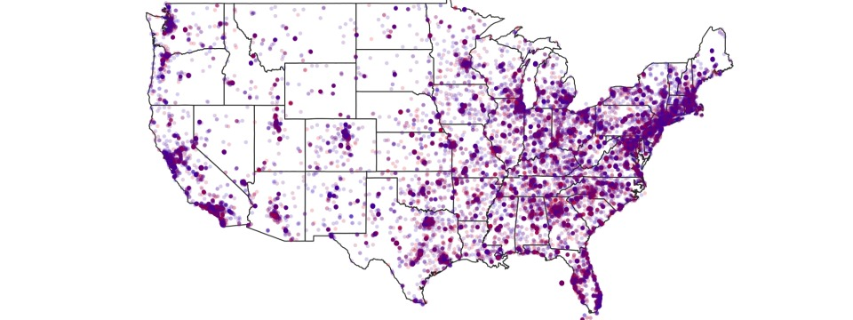
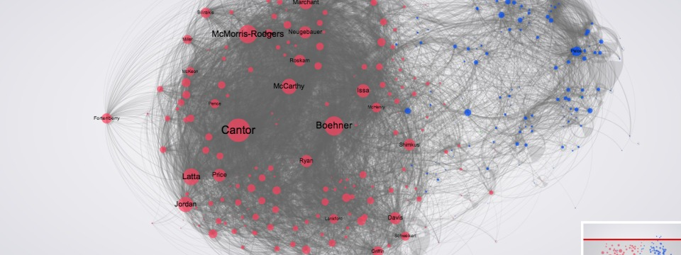
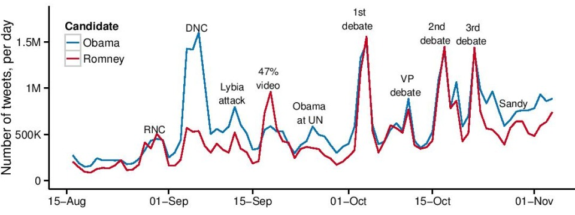
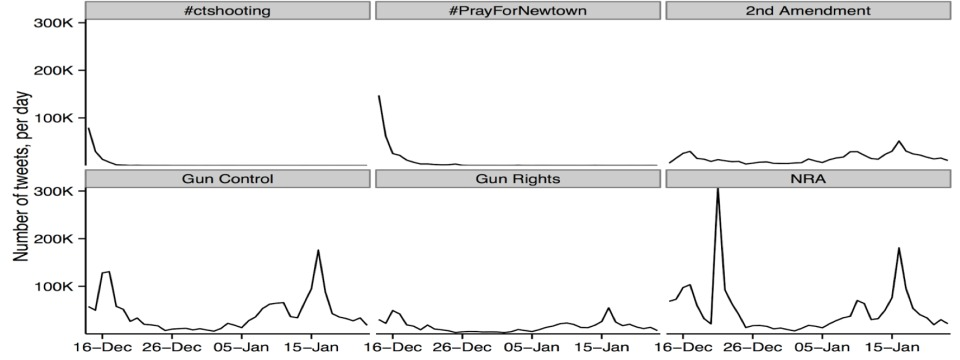

Geography and Ideology
Distribution of Twitter users in USA, colored by ideology

The US Congress on Twitter
Network of following links of Senators and Representatives

Timeline of the 2012 Election on Twitter
Number of tweets mentioning Obama or Romney, per day

Tweets in the Aftermath of the Newtown Tragedy
‹
›
The SMaPP team is working on an interdisciplinary research project that has been funded by the NYU
Research Investment Fund and the INSPIRE program of the National Science Foundation (Award #1248055). The project is
entitled “Computer Learning of Dynamical Systems to Investigate Cognitive and
Motivational Effects of Social Media Use on Political Participation.”
Our goals are fourfold:
-
To formalize and test a dynamic, integrative theory of the cognitive and motivational effects of social media on political participation;
-
To design computer programs to extract meaningful slices of data from existing social media platforms such as Twitter;
-
To identify “best practices” with respect to techniques for culling, analyzing, and annotating complex social network
data and to apply these practices in our research (e.g., by focusing on single events and scaling upward
to handle extremely large samples of events and participants);
-
To offer definitive empirical conclusions concerning the causal mechanisms by which social media affects political participation (by
integrating the use of original panel surveys and data from social media sources).
Principal Investigators:
Richard Bonneau (Biology/Computer Science)
John T. Jost (Psychology and Politics)
Jonathan Nagler (Politics)
Joshua Tucker (Politics and Russian and Slavic Studies)